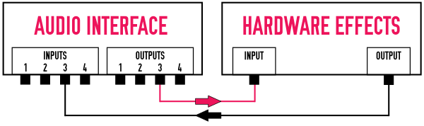
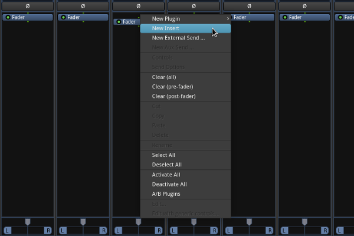
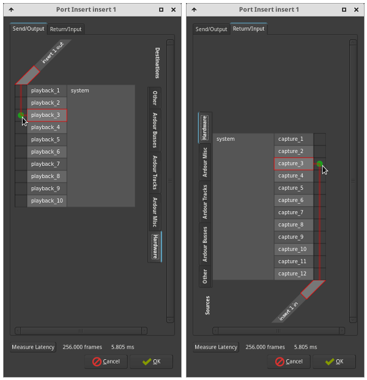
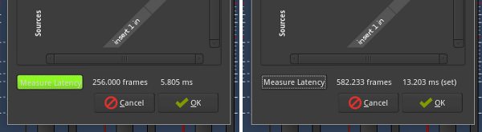
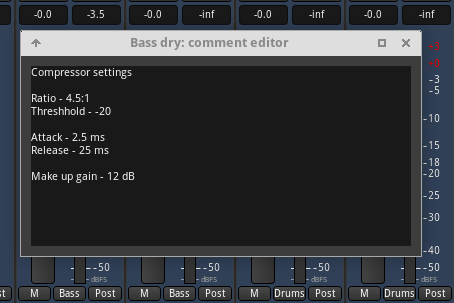
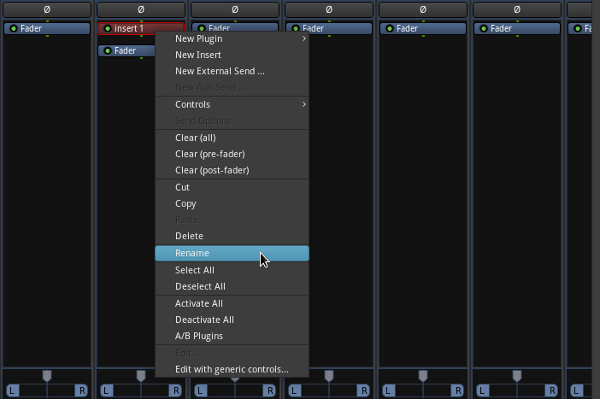
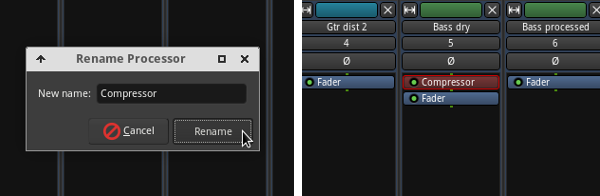

How to use outboard gear in Ardour
There may be times when you are mixing that you want to, or have to, use external effects or processors. To do this in Ardour, we use inserts. So how do these work and how do we set it all up? Let's find out!
Why use hardware effects?
Using plugins is very convenient so why would you want to use a hardware unit? The two main reasons would be -
- You can't find a plugin equivalent
- You want the sound of a particular piece of hardware, eg. tube hardware
In this tutorial, I will demonstrate how to insert a mono hardware compressor into an audio track.
What are Inserts?
If you've ever used a hardware mixer, you may already be familiar with inserts. Inserts use

It's easy to see why they are called inserts, as you are essentially inserting something into that point of the signal path.
So now that we know how it works, let's set up everything so that we can use our hardware compressor in Ardour.
Connecting everything up
Before we do anything else, we need to make sure that our hardware unit is connected up correctly for us to be able to insert it into the signal path. For this, our audio interface will need to have spare inputs and outputs. How many spare inputs and outputs you need will depend on what you intend on inserting into the signal path. In this example I am using a mono compressor unit, so I will need just one spare input and output.
In the example, outputs 1 & 2 are being routed to my speakers and inputs 1 & 2 are being kept free for recording purposes. I have decided to use output 3 and input 3 for the send and return.
Here's how our connections to our hardware unit should now look -

Matching levels and connection types
Before we move on any further, you should make sure that your hardware units I/O levels are matched to your interfaces I/O levels. Our I/O needs to be line level and hardware units operation levels vary. Some units use either +4dBu or -10dBV, others give you the choice between the two. In either case, we need to make sure the connections between our interface and hardware unit are matched. If you have the choice, +4dBu is considered the better option.
In this case I am using standard jack cables to connect up to my hardware, however, this is not the only way to make your connections. For example, if you have S/PDIF I/O on both your hardware unit and your audio interface, this would be another option. In fact, using something like S/PDIF that stays within the digital domain is a better choice as there will be minimal degradation of your signal.
Your choice will depend upon which I/O are available to you but if and when possible, choose digital I/O over analog I/O.
We now have our compressor unit correctly connected up to our interfaces inputs and outputs. Now we need to set up the send and return routing from within Ardour.
Configuring sends and returns
Everything is now set up and ready to go on the hardware side. Let's now make the software connections. For this example, I am going to insert the compressor unit into a bass guitar track.
Take the following steps -
- Right click in the processor box area
- Select “new insert” from the menu

This will now place an insert box in the processor area, similar to how a plugin looks. While this is not an internal plugin, it can be treated similarly to such. Moving it around in the signal chain, positioning it pre or post fader, etc, will give you the exact same results as you would expect from doing the same to a plugin.
Next, double click on the insert box. This will bring up the send/return dialog. Here we can route to, and back from, our hardware unit so that it is inserted into the signal path.
What we want to do is send the signal out of output 3, through the hardware unit and return the processed signal into Ardour via input 3 on our audio interface.
The send tab on the top will automatically be selected. Select the hardware tab down the right hand side and select 'playback 3'. This will send the signal out of output 3 on our audio interface and into our hardware unit.
Next, go to the return tab. The hardware tab down the side should still be selected. Now we want to connect up our return signal to our audio interfaces inputs. Here we will select 'capture 3'.

We now have our insert loop complete. We are almost there but there is something else we need to take into account, latency. The audio signal is being sent out of the computer and back in again. This round trip will take a few milliseconds. If we don't account for it, the playback of the material on this track will be slightly delayed in relation to other tracks.
This is what the 'measure latency' button in the insert window is for. This sends out a test audio signal. When this signal returns, Ardour can analyse it and calculate how much latency is involved in the round trip. It will then compensate for this delay on that track, insuring that all tracks play back time aligned. Let's set it up -
- Go to your hardware unit and make sure that it is either set to bypass mode, or depending on what type of processor it is, is at least processing the signal as little as possible. You don't want the test audio signal to be coloured/distorted or Ardour may not be able to correctly calculate the round trip.
- Click on the measure latency button. A short burst of sound will be sent. If you are using hardware monitoring, make sure to have this disabled or the sound burst will play through your playback system and may make you spill your coffee!
- You should now see a measurement with "(set)" written after it. This means that the measurement was successful and it's latency is now compensated for within the session. Press OK.

Now our insert is fully set up, operational and has its latency compensated for. We can now use our hardware unit to process the audio on our track.
Management
There are various aspects of using internal plugins in Ardour that make things easier when compared to using inserts. The main thing we lose out on when using inserts is the auto recall of effects settings. What we can do here is to simply note what settings you used for your hardware unit.
On your track, click on the comments box at the bottom of the channel strip. We can take note of our settings/presets used here so we can always refer back to them at a later stage. If you use different hardware for different mixing sessions, it would also be useful to note in your comments which hardware you used.

By default, inserts will be named 'insert x'. This isn't very helpful if you are using more than one insert. Lets rename our insert so that it is more descriptive. Right click on the insert and select “rename”.

We can now give our insert a more descriptive name. Let's rename this insert “Compressor”.

If you have a favourite piece of hardware that you use on a regular basis, it might be worthwhile hooking it up permanently to your audio interface. This will make it easier to set up your inserts in future.
Mixdown
One thing to note is that Ardour only exports in freewheel mode, meaning that it can only export faster than realtime. This is great when you are only using plugins within a session as it means faster export times but it is incompatible with using hardware processors that only work in realtime. So, how do we deal with this?
There are two primary ways to manage this. Let's look at these.
Record processed track to an empty track
If you want to do everything in Ardour, a straight forward way to export your mix with hardware processing is to first record your processed track to an empty track in realtime. This is as simple as it sounds.
- First create an empty audio track
- Disconnect the outputs of your processed track from the master bus
- Connect the outputs of your processed track into your new empty audio track
- Set your empty audio track to record and play your session through
You now have a session, including your hardware processing, that you can export from within Ardour. You also have the advantage of having the original audio and the processed audio within your session.
Use jack capture
Jack capture is a tool that allows you to capture audio from JACK. There are various ways to use this but if you are using Cadence from KXStudio, the easiest way is to use 'Render'.
You can find detailed instructions on how to use Cadence Render in our Session Management tutorial.
Other uses of inserts
Inserts can be used to insert anything external to Ardour, into a mixer strips signal path. While this tutorial focuses on hardware inserts, you can also route (send/return) signals to any software external to Ardour.
There are some useful standalone JACK plugins that are not available as plugins for Ardour. Using inserts, you could easily incorporate these into a workflow with Ardour. If you do go down this road, it might also be useful to look into session management. I would recommend NSM (Non Session Manager).
Summary
With the growing number of plugins available for Linux these days, there are fewer reasons than there used to be for needing to use inserts. Having said that, inserts do allow for more flexibility and there are times when only a real hardware unit will do, for example, you may want the sound of a real tube hardware unit. Having the ability to have a hybrid set up of software and hardware processors allows you to have the best of both worlds.
Written by Conor Mc Cormack